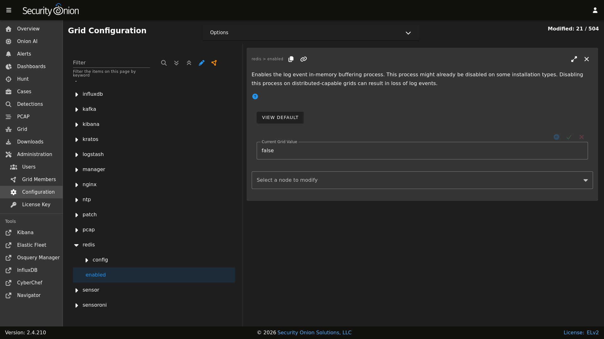

Redis
From https://redis.io/:
Redis is an open source (BSD licensed), in-memory data structure store, used as a database, cache and message broker. It supports data structures such as strings, hashes, lists, sets, sorted sets with range queries, bitmaps, hyperloglogs and geospatial indexes with radius queries.
On Standalone (non-Eval) installations and distributed deployments, Logstash on the manager node outputs to Redis. Search nodes can then consume from Redis.
Queue
To see how many logs are in the Redis queue:
sudo so-redis-count
If the queue is backed up and doesn’t seem to be draining, try stopping Logstash on the manager node:
sudo so-logstash-stop
Then monitor the queue to see if it drains:
watch 'sudo so-redis-count'
If the Redis queue looks okay, but you are still having issues with logs getting indexed into Elasticsearch, you will want to check the Logstash statistics on the search node(s).
Tuning
Security Onion configures Redis to use 812MB of your total system memory. If you have sufficient RAM available, you may want to increase the redis_maxmemory setting by going to Administration –> Configuration –> redis. This value is in Megabytes so to set it to use 8 gigs of ram you would set the value to 8192.
{kind=link}

Logstash on the manager node is configured to send to Redis. For best performance, you may want to tune the ls_pipeline_batch_size value at Administration –> Configuration –> logstash_settings to find the sweet spot for your deployment.
Note
Logstash on search nodes pulls from Redis. For best performance, you may want to tune ls_pipeline_batch_size and ls_input_threads at Administration –> Configuration –> logstash_settings to find the sweet spot for your deployment.
Note
Diagnostic Logging
Redis logs can be found at /opt/so/log/redis/. Depending on what you’re looking for, you may also need to look at the Docker logs for the container:
sudo docker logs so-redis
More Information
Note
For more information about Redis, please see https://redis.io/.